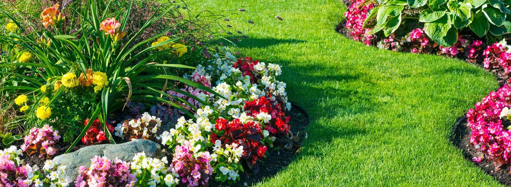
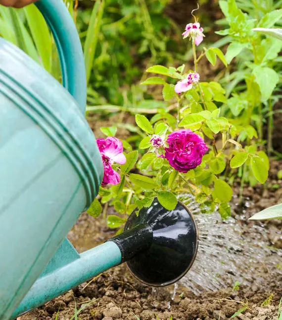
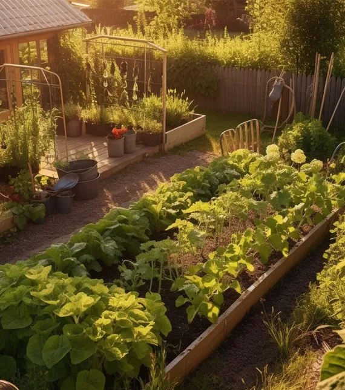

Lagrene Paysagiste 59 : Votre jardinier compétent et abordable à Lille 59000
Jardinier à Lille
Chez Lagrene, nous sommes bien plus qu’un simple service de jardinage à Lille 59000. En tant que jardinier pas cher du coin, nous comprenons l’importance de maintenir votre espace extérieur sans vous ruiner. Nos services couvrent un large éventail de besoins, de l’élagage à l’entretien général du jardin. Qu’il s’agisse d’un petit jardin de ville ou d’un vaste espace vert, notre équipe d’experts vous assure une prestation de qualité à des prix compétitifs. Demandez un devis jardinier dès aujourd’hui et laissez-nous rendre votre espace vert éclatant à un tarif qui vous convient.
Notre savoir-faire
Lagrene Paysagiste 59 : conception de la coupe de haies selon les désirs
Une haie soigneusement taillée peut véritablement transformer l’aspect de votre jardin à Lille 59000. Chez Lagrene, nous accordons une attention minutieuse aux détails et avons l’expertise nécessaire pour réaliser des tailles de haies impeccables. En tant que jardinier spécialisé dans la taille de haie, nous prenons en charge la conception et la coupe de votre haie selon vos désirs. Qu’il s’agisse d’une coupe classique, d’un design moderne ou d’une taille artistique, notre équipe possède le savoir-faire pour concrétiser vos idées. Obtenez un devis jardinier pour bénéficier d’un service personnalisé et obtenir une haie taillée avec précision, transformant ainsi votre jardin en un véritable joyau. Grâce à notre expertise en taille de haie, nous pouvons faire de votre espace extérieur un lieu enchanteur où chaque buisson reflète une esthétique soignée et élégante.

Confiez votre jardin à un jardinier pro, de la tonte à la plantation
Chez Lagrene, être un jardinier abordable ne signifie en aucun cas sacrifier la qualité. Nous sommes fiers de fournir des services professionnels à tarif accessible à Lille 59000. Notre équipe de jardiniers expérimentés s’engage à entretenir votre jardin avec soin et expertise. De la tonte de pelouse à la plantation de fleurs, nous prenons en charge chaque détail pour garantir un espace extérieur éclatant et bien entretenu. Notre objectif est de vous offrir un service d’entretien de jardin qui répond précisément à vos besoins, en assurant que votre espace extérieur reflète votre style et reste en parfait état. Obtenez un devis jardinier détaillé pour découvrir comment nous pouvons rendre votre jardin radieux à un prix avantageux, vous offrant ainsi un espace extérieur soigné et agréable à vivre, sans pour autant alourdir votre budget.
Expertise et simplicité avec votre jardinier à Lille 59000
Avec Lagrene, vous avez découvert un partenaire fiable pour l’entretien de votre jardin à Lille 59000. En tant que jardinier professionnel, nous unissons notre expertise à une approche simple et accessible. Nous reconnaissons que chaque jardin est unique, c’est pourquoi nos services d’entretien de jardin sont adaptés à vos préférences et à l’état spécifique de votre espace extérieur. De la taille des arbustes à la gestion des pelouses, nous assurons un service complet avec des tarifs transparents et compétitifs. En sollicitant un devis jardinier, vous bénéficierez d’un entretien de jardin sur mesure, conçu pour répondre à vos exigences spécifiques. Cette approche personnalisée garantit que votre jardin reste en parfait état, reflétant vos préférences et répondant à vos attentes en matière d’entretien et d’esthétique.

La qualité sans vider votre porte-monnaie
Chez Lagrene, nous sommes fermement convaincus que l’excellence en matière de jardinage ne doit pas être hors de portée. Notre équipe de jardiniers abordables à Lille 59000 vous propose des services de qualité sans vider votre porte-monnaie. Nous comprenons parfaitement l’importance de maintenir un espace extérieur esthétique et bien entretenu, c’est pourquoi nous offrons une gamme complète de services d’entretien de jardin à des tarifs abordables. Des travaux de plantation aux soins réguliers du jardin, nous sommes là pour vous offrir un jardin éclatant à un prix raisonnable. En demandant un devis jardinier dès maintenant, vous découvrirez comment nous pouvons embellir votre jardin sans que cela ne représente une dépense exorbitante, vous permettant ainsi de profiter d’un espace extérieur agréable et soigné sans pour autant sacrifier votre budget.
Le partenaire parfait pour garder les jardins en pleine forme
Avec Lagrene, vous avez trouvé le partenaire idéal pour maintenir votre jardin en pleine forme à Lille 59000. Notre équipe de jardiniers expérimentés sait comment entretenir efficacement votre espace extérieur, tout en adaptant nos services à vos besoins spécifiques. De la tonte régulière à la création de nouveaux parterres de fleurs, nous prenons soin de chaque aspect de votre jardin avec une précision méticuleuse. Nos tarifs sont compétitifs et transparents, et notre objectif est de vous offrir un service d’entretien de jardin personnalisé qui répond parfaitement à vos attentes. En demandant un devis jardinier, vous pourrez profiter d’un jardin bien entretenu, pris en charge par des mains expertes, et ainsi vous assurer que votre espace extérieur reste un lieu verdoyant et agréable à vivre tout au long de l’année
Demander un devis gratuit
Nos autres services